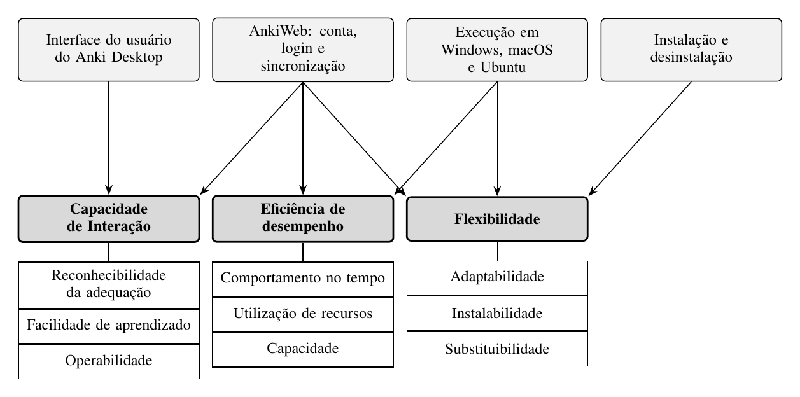

Fase 1 — Estabelecer os requisitos de avaliação
Esta página reproduz a Seção III do artigo da Entrega 1, entregue em 26/10/2026.
As referências entre colchetes seguem a numeração do artigo.
Propósito da Avaliação e Uso Pretendido
A avaliação foi solicitada pela professora da disciplina de Qualidade de Software 1, que atua como requisitante. O objetivo da avaliação é indicar pontos de melhoria no produto, sob o ponto de vista do estudante, usuário final do Anki.
Os pontos de melhoria identificados serão usados pela professora para avaliar a capacidade da equipe de fundamentar tecnicamente uma avaliação de produto. Serão também registrados como recomendações priorizadas para dois públicos: os mantenedores do Anki, que podem usá-los para decidir correções, e os estudantes, que podem usá-los como orientação de uso. O ponto de melhoria mais relevante será a base da ação de melhoria da Entrega 2.
Requisitante e Partes Interessadas
A Tabela I apresenta as partes interessadas, suas necessidades e a influência de cada uma nas escolhas da avaliação.
Tabela I. Partes interessadas na avaliação
| Parte interessada | Papel | Necessidade | Influência na avaliação |
|---|---|---|---|
| Professora da disciplina | Requisitante | Uma avaliação fundamentada e rastreável | Acordou as características avaliadas e define prazos e formato |
| Estudante | Usuário final (operador) | Usar o Anki sozinho, sem lentidão, em qualquer sistema | Define o ponto de vista, as tarefas dos testes e os critérios de julgamento |
| Mantenedores do Anki | Desenvolvedor e fornecedor | Problemas descritos de forma reproduzível e priorizada | Limitam o escopo ao que é observável e ao código aberto; o AnkiWeb é de código fechado |
| Equipe avaliadora | Avaliador | Um escopo viável no prazo | Define as plataformas e a profundidade da avaliação |
Tipo de Produto e Descrição do Software
O produto avaliado é o Anki Desktop, versão 26.09.3, e o AnkiWeb, na versão em produção na data da avaliação, com a data de acesso registrada; o AnkiWeb é avaliado apenas na criação de conta, no login e na sincronização. O domínio é a educação, com estudo por repetição espaçada. Na classificação de Pressman, o Anki é um software de computador pessoal; na IEEE 1062, é um produto COTS, gratuito e de código aberto, e o AnkiWeb é um serviço gratuito de código fechado. Os principais usuários são estudantes universitários e autodidatas; o uso exige conhecimento básico de informática e nenhum conhecimento prévio de repetição espaçada. O uso é individual, em computador pessoal com Windows, macOS ou Ubuntu, sem treinamento formal nem suporte técnico; o estudo funciona sem internet, mas conta, login e sincronização exigem conexão.
O Anki Desktop possui oito funções principais: login na conta AnkiWeb; criação de baralhos; escrita de cards; revisão de cards, na qual o estudante avalia a própria resposta e o agendamento define quando o card volta; busca e edição no navegador de cards; importação e exportação; sincronização; e configuração das opções de estudo. A avaliação dedica-se principalmente à criação de baralhos, à escrita e à revisão de cards, ao login e à sincronização. A interface possui 16 janelas principais, como a janela principal, Adicionar, Navegador de cards, Opções do baralho, Importar, Exportar e Login de sincronização.
Há massa de dados de duas fontes: coleções sintéticas geradas com o pacote anki (por exemplo, 10 mil, 50 mil e 100 mil cards), para Eficiência de desempenho e Flexibilidade; e baralhos compartilhados no AnkiWeb, para os testes de Capacidade de interação. Os requisitos de software declarados pelo fabricante (apps.ankiweb.net e docs.ankiweb.net, consultados em 14/10/2026) são: Windows 10 versão 1703 ou posterior (x64) ou Windows 11 (ARM); macOS 13 ou posterior, em Apple Silicon ou Intel; distribuição Linux de 2022 ou posterior (x64, glibc 2.35+) ou de 2024 ou posterior (ARM, glibc 2.39+), com o pacote zstd; e, para o AnkiWeb, navegador atualizado e internet. Não há requisitos mínimos de memória ou processador.
Modelo de Qualidade
O modelo de qualidade da ISO/IEC 25010:2023 foi adaptado ao Anki a partir dos componentes do produto submetidos à avaliação (Figura 1). A adaptação mapeia as características da norma, que são abstratas, para os componentes com os quais o estudante interage e restringe o escopo às subcaracterísticas mostradas na figura: a instalação e desinstalação, para a Flexibilidade (adaptabilidade, instalabilidade e substituibilidade); a interface gráfica e a revisão de cards, para a Capacidade de interação (reconhecibilidade da adequação, facilidade de aprendizado e operabilidade); a execução nos diferentes sistemas operacionais, para a Eficiência de desempenho e a Flexibilidade; e o fluxo de conta e sincronização do AnkiWeb, para as três características.

Figura 1. Modelo de qualidade adaptado ao Anki Desktop e ao AnkiWeb, a partir da ISO/IEC 25010:2023 [2]. De cima para baixo: componentes avaliados, características e subcaracterísticas.
Seleção e Priorização das Características
A ênfase de cada característica foi definida pela combinação do impacto para o estudante (quanto uma falha atrapalha o uso) com a viabilidade de medição com os recursos e o prazo da equipe (Tabela II). A escolha de Capacidade de interação foi acordada com a requisitante, e as seis características não escolhidas ficam fora do escopo por acordo com ela.
Tabela II. Priorização das características avaliadas
| Característica | Impacto para o estudante | Viabilidade de medição | Ênfase |
|---|---|---|---|
| Capacidade de interação | Alto: todo estudante usa a interface sem treinamento | Média: exige testes com participantes | 5 |
| Eficiência de desempenho | Médio: notebooks variados e coleções que crescem | Alta: medições instrumentadas | 3 |
| Flexibilidade | Médio: estudantes usam sistemas diferentes e trocam de computador | Alta: instalação e migração controladas | 3 |
Escopo, Profundidade e Objetos da Avaliação
Objetos e abrangência. Instalação e desinstalação, interface do usuário e execução do Anki Desktop 26.09.3, e criação de conta, login e sincronização no AnkiWeb; três características da ISO/IEC 25010:2023 (Capacidade de interação, Eficiência de desempenho e Flexibilidade), nas plataformas Windows, macOS e Ubuntu. As subcaracterísticas avaliadas são as da Figura 1: reconhecibilidade da adequação, facilidade de aprendizado e operabilidade; comportamento no tempo, utilização de recursos e capacidade; adaptabilidade, instalabilidade e substituibilidade.
Profundidade. Avaliação externa, do ponto de vista do estudante, baseada no comportamento observável, por meio de testes com usuários, medições instrumentadas e inspeção da interface. O código-fonte do Anki Desktop serve apenas como apoio; o AnkiWeb, de código fechado, é avaliado só pelo comportamento. Não se trata de certificação nem de laudo de conformidade.
Relacionamento e restrições. Avaliação independente, com a documentação oficial como referência; prazo até 18/11/2026, seis avaliadores, sem custo, apenas computadores da equipe e participantes com consentimento registrado.
Fora do escopo. AnkiDroid e AnkiMobile (produtos e bases de código separados); o algoritmo de agendamento (exigiria acompanhar usuários por semanas); as demais funções do AnkiWeb; as demais subcaracterísticas das três características escolhidas que não aparecem na Figura 1; e as seis características não escolhidas, por acordo com a requisitante.
Relação com os Objetivos de Desenvolvimento Sustentável
A avaliação se relaciona ao ODS 4, Educação de Qualidade. Na meta 4.3 (acesso igualitário à educação superior de qualidade, a preços acessíveis), o Anki Desktop é gratuito e apoia o estudo autônomo. Na meta 4.4 (jovens e adultos com habilidades relevantes), o indicador 4.4.1, sobre habilidades em tecnologias da informação e comunicação, relaciona-se à facilidade de aprendizado avaliada em Capacidade de interação. Na meta 4.5 (eliminar disparidades e garantir acesso a pessoas em situação de vulnerabilidade), relaciona-se à Flexibilidade e aos aspectos de inclusão da interface. Pontos de melhoria que reduzem barreiras de uso ampliam o alcance de uma ferramenta gratuita de estudo.